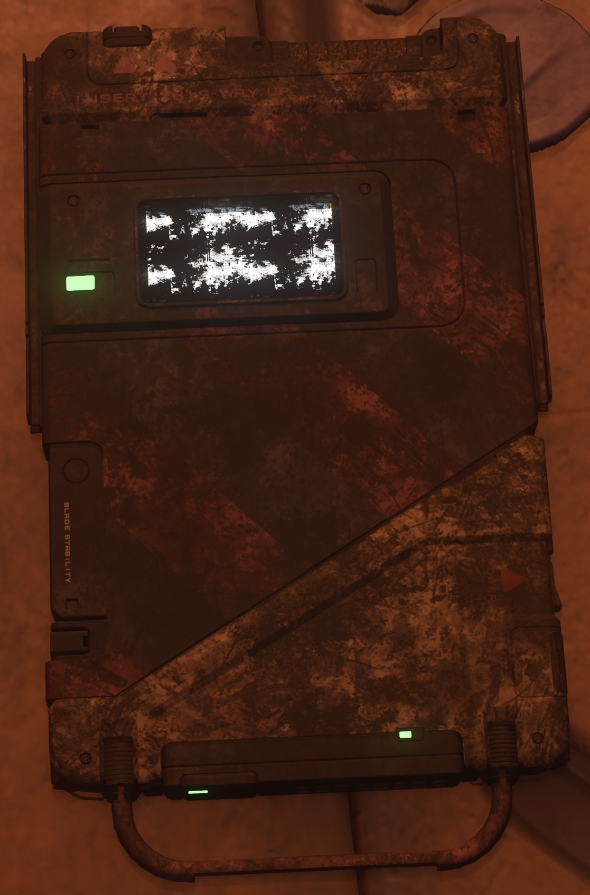
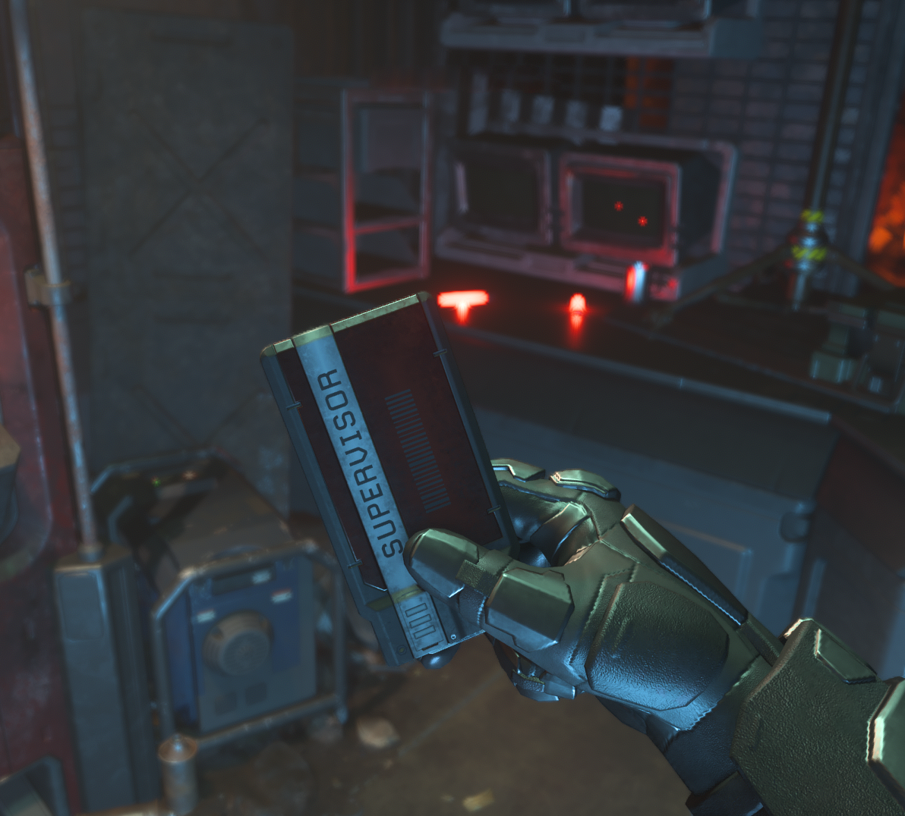
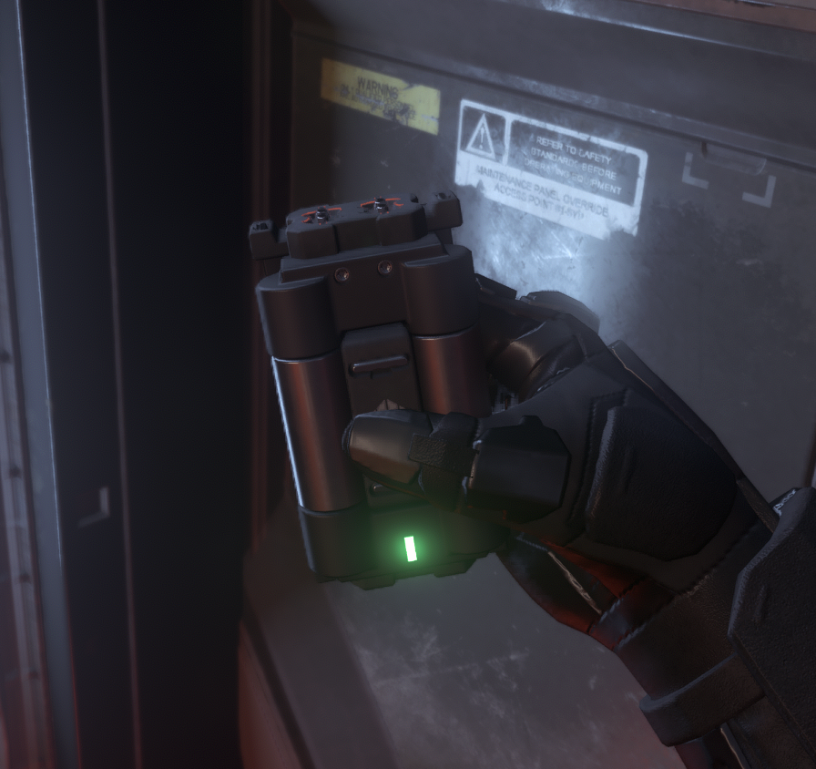

Find
Blue Keycard

Supervisor keycards are extremely rare and require infiltrating Lagrange outposts.

Some doors require functional Fuses to operate. Bring Multi-Tools/Tractor beams to manually insert them if prompts fail.

To actually use the Comboards, you must extract them at active outposts. They operate on a long-duration timer cycle.
Once all 5 lights turn green, you can insert your comboards. Three pipes per outpost.